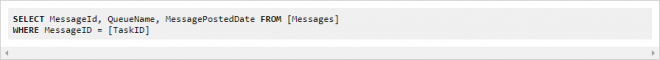
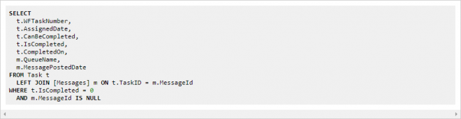

You many see the following error message when you try and work a Task against a Ticket.
- Could not find work queue item
This could be due to the fact the server hasn't processed the Tasks in the Messages table.
Error starting/continuing dialog model execution
System.Exception: could not find work queue item [GUID] the item no longer exists. number of items in queue [#]
at LogicBase.Components.Default.ExchangeAdapters.LogicBaseExchangeWorkQueue.GetItem(String serviceID, String id)
at LogicBase.Core.Models.Workflow.EmbeddedDialogModel.WorkflowDialogHTTPHandler.StartDialog(HttpContext context, DialogSession session)
at LogicBase.Core.Models.Dialog.DialogHttpHandlerBase.System.Web.IHttpHandler.ProcessRequest(HttpContext context)
Generally, could not find work queue item means something happened with a task message. There are some cases where a message blocks processing but if earlier and later incidents work, that is not the case.
Process information is in ReportProcess table, Task information is in Task table. The state information, variables etc are saved with the message and functional messages are necessary for the task to be workable.
There are normally three messages for a functional Incident, one in each of these queues:
local.workflowsqlexchange-incident_mgmt.processes
local.workflowsqlexchange-incident_mgmt.tasks
local.workflowsqlexchange-incident_mgmt.assignments
.processes is the process data, .tasks is task data, .assignments is task assignment.
Fully finding the root cause is usually not possible but Messages tables are actively updated, having messages from, say, last day could still be in TempDB or transaction logs and be lost when server fails over.
I would first recommend looking for messages associated with affected Task. The following two queries should normally return the same message(s) but in this case might be good idea to run both:
SELECT MessageId, QueueName, MessagePostedDate FROM [Messages]
WHERE MessageID IN (SELECT MessageId FROM MessageProperties
WHERE AttributeCharValue='[TrackingID]')
Or

Regardless of why exactly this happened, there usually is not much we can do to get these Incidents back. In most cases the messages are gone. If they are there but corrupt, we do not have a good way to repair them.
Resolution is to re-create the affected tickets and close the affected Incidents with Bulk Close/Close Process tool.
To try and find the affected tickets my recommendation is to look for tasks that are not completed, can be completed but do not have a task message.

I would start with this query. This might need some tweaking to specific situation though.
Please be careful with this last query with regards to performance, it joins Task and Messages tables which are usually large.